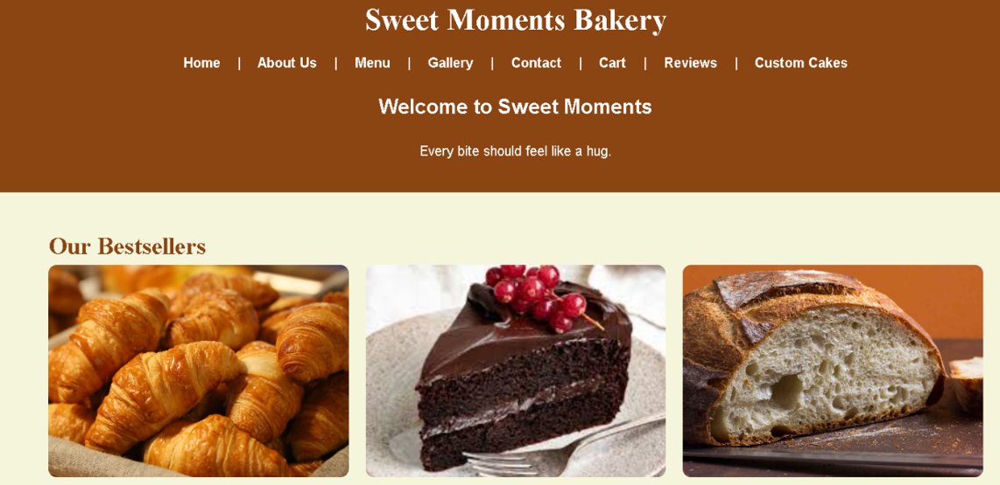

Chief Choice Mobile App
The Chief Choice Mobile App was developed as part of a Mobile Application Development project. The application allows the chief to browse meals, view menu categories and allow you to update the menu using an easy-to-use interface.
Technologies Used
- Java
- visual Studio
- Expo Go
- GitHub

Sweet Moments Bakery Website
A responsive bakery website created using HTML, CSS and JavaScript. The website includes multiple pages, image galleries, online ordering features and responsive navigation.
Technologies Used
- HTML
- CSS
- JavaScript
- GitHub

Food Choices
The Food Choices app helps users decide what to eat at different times of the day. Users simply enter a time of day, such as morning, afternoon, evening, or dessert, and the app provides a suitable food suggestion. The app is designed to make choosing meals and snacks easier and reduce the stress of deciding what to eat. It also includes Enter and Reset buttons, making the application simple and easy to use.
Technologies Used
- Kotlin
- Android Studio
- GitHub